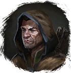
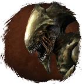

Карта Насекомых
Предметы / Ключи
Открыть в интерактивной вики →
| Вес | 10 |
|---|---|
| Цена | 50 000 |
Описание
Чтобы прочесть эту карту, вам необходима помощь
Позволяет быстро попасть в инстанс Тигр без путешествия по тоннелям.
Тигр без путешествия по тоннелям.
Можно получить во время различных игровых ивентов, также есть шанс получить за выполнение задания у Кимерул-Маг либо выполнив ежедневное задание "Зерно Хаоса" у
Кимерул-Маг либо выполнив ежедневное задание "Зерно Хаоса" у  Варник (но награда меняется).
Варник (но награда меняется).

Проводник насекомых. Вы найдете его в какой-то пещере с червяками. Находящиеся на карте знаки указывают на то, что она ведет к пещере какого-то большого насекомого либо тигра.Позволяет быстро попасть в инстанс

Богомол илиТигр без путешествия по тоннелям. Можно получить во время различных игровых ивентов, также есть шанс получить за выполнение задания у
Кимерул-Маг либо выполнив ежедневное задание "Зерно Хаоса" у Варник (но награда меняется).| Карта, для чтения которой нужен Червь-проводник. Найдёшь его в какой-то пещере с червями. Знаки на карте указывают, что она ведёт в пещеру какого-то большого насекомого. |
Применение
Способы получения
|